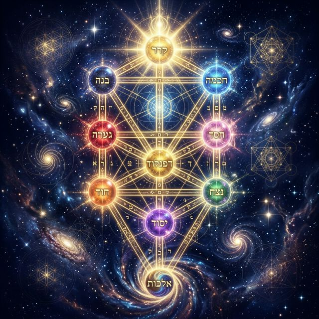
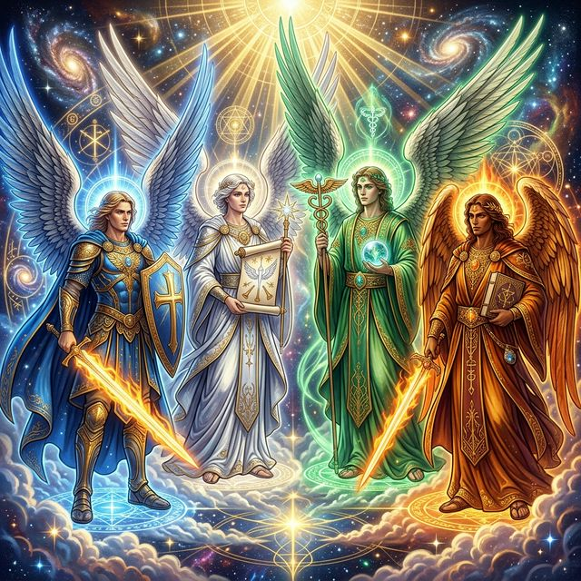
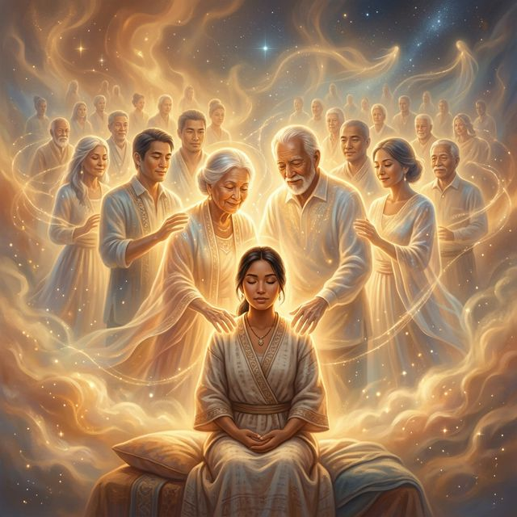
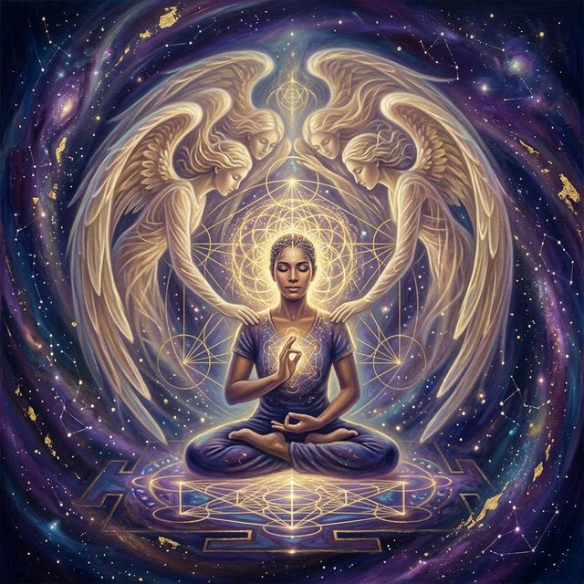

1. L'Éveil à l'Invisible
Et si vous n'étiez jamais vraiment seul dans cette aventure qu'on appelle la vie ?
Imaginez un instant que, depuis votre premier souffle, des compagnons bienveillants marchent à vos côtés, invisibles mais présents, comme des phares dans la brume. Ces présences discrètes, qu'on appelle guides spirituels, ne sont ni des hallucinations ni des créatures fantastiques sorties d'un conte, mais plutôt des alliés subtils qui nous accompagnent dans notre voyage terrestre.
Qu'est-ce qu'un guide spirituel ?
Un guide spirituel est un être de lumière — qu'il soit ange, ancêtre, animal totem ou esprit de la nature — qui offre orientation, protection et sagesse pour nous aider à naviguer les marées parfois tumultueuses de l'existence. Pensez à eux comme à des conseillers cosmiques, des mentors invisibles qui ne vous imposent rien, mais qui illuminent le chemin lorsque vous leur demandez de l'aide.
Le Concept Clé : Nous Avons Tous des Guides
Voici la bonne nouvelle : vous n'avez pas besoin d'être un mystique chevronné ou un moine tibétain pour avoir des guides. Nous en avons tous, certains qui nous accompagnent depuis la naissance (comme des compagnons de route permanents), d'autres qui interviennent temporairement pour des missions spécifiques — un peu comme des consultants spirituels qui arrivent au moment précis où leurs compétences sont nécessaires.
La seule différence entre ceux qui "travaillent" avec leurs guides et les autres ? L'intention consciente de les reconnaître et de communiquer avec eux.
2. La Hiérarchie des Alliés Spirituels
Dans cette cartographie de l'invisible, les guides spirituels se répartissent en différents "mondes" ou sphères d'influence. Imaginez une vaste bibliothèque cosmique où chaque rayon contient des alliés spécialisés dans différents domaines de votre vie.

✦ L'Arbre de Vie — carte sacrée de la Kabbale reliant les sphères d'existence ✦
Le Monde d'En-Haut : Les Architectes Célestes
C'est le royaume des anges, archanges et maîtres ascensionnés — ces êtres de pure lumière qui vibrent à des fréquences très élevées. Ils représentent les forces les plus universelles et transcendantes.
Focus : Les 72 Anges de la Kabbale
Dans la tradition kabbalistique, 72 anges gardiens se partagent la responsabilité de veiller sur l'humanité. Chacun possède :
- Un sceau unique (signature énergétique visuelle)
- Un domaine d'influence spécifique : amour, protection, guérison, discernement, créativité...
- Des périodes de régence : certains jours de l'année où leur influence est particulièrement forte
Ces anges ne sont pas de simples "protecteurs passifs" — ce sont des transmetteurs de qualités divines. Invoquer l'ange de la compassion, par exemple, c'est s'ouvrir à cette vertu pour mieux l'incarner dans sa propre vie.
Les Archanges — comme Michel (protection), Raphaël (guérison), Gabriel (communication) ou Uriel (sagesse) — sont des figures majeures qui supervisent des missions à grande échelle et peuvent être invoqués pour des enjeux collectifs ou personnels de grande ampleur.
Les Maîtres Ascensionnés sont des âmes qui ont vécu sur Terre et ont atteint un niveau de conscience élevé (pensez à Bouddha, Jésus, Marie-Madeleine, Quan Yin). Ils comprennent intimement nos défis humains et nous guident avec une empathie née de l'expérience.

✦ Michel, Gabriel, Raphaël et Uriel — les quatre archanges piliers de la protection divine ✦
Les 72 Anges de la Kabbale : Guide Complet
Découvrez les 72 anges gardiens de la tradition kabbalistique. Chaque ange correspond à une période de l'année (environ 5 jours) et à des domaines d'influence spécifiques. Cliquez sur une carte pour découvrir les détails complets de chaque ange : symbolisme, invocations, vertus et guidance.
Comment utiliser ce guide : Trouvez votre ange gardien selon votre date de naissance, ou choisissez un ange dont le domaine résonne avec vos besoins actuels. Méditez sur son nom, visualisez ses qualités, et ouvrez-vous à sa guidance.
Le Monde du Milieu : Les Gardiens de la Terre
C'est le domaine des esprits de la nature, des dévas et des guides personnels — ceux qui sont intimement liés à notre mission de vie, nos passions et notre environnement terrestre.
Les Élémentaux
Gnomes (terre), ondines (eau), sylphes (air) et salamandres (feu) sont les gardiens des forces élémentales. Ils régulent les énergies naturelles et peuvent nous enseigner comment travailler harmonieusement avec les éléments dans notre vie quotidienne.
Les Dévas
Ces esprits supervisent des lieux spécifiques (une forêt, une montagne, un jardin) ou des plantes particulières. Connecter avec eux, c'est honorer l'intelligence vivante du monde naturel.
Les Guides de Mission
Ce sont vos mentors personnels, souvent des âmes avec lesquelles vous avez partagé des vies antérieures ou qui ont une expertise alignée avec votre chemin actuel. Un écrivain pourrait avoir un guide poète, un guérisseur un guide médecin des temps anciens. Ils murmurent l'inspiration à votre oreille intérieure.
Le Monde d'En-Bas : Les Messagers de l'Instinct
Le royaume des animaux totems — ces archétypes puissants qui représentent nos qualités intérieures, nos instincts primordiaux et notre connexion à l'inconscient collectif.
Dans la tradition chamanique, chaque personne possède au moins un animal de pouvoir qui reflète sa nature essentielle et lui prête ses dons :
- Le loup pour le leadership et l'instinct social
- L'aigle pour la vision d'ensemble et la liberté
- L'ours pour la force intérieure et l'introspection
- Le serpent pour la transformation et la guérison
Ces alliés ne sont pas de "simples symboles" — ce sont des guides actifs qui peuvent nous prêter leur médecine (leur pouvoir particulier) lors de voyages chamaniques ou dans nos rêves.
✦ Les gardiens du monde d'En-Bas — animaux de pouvoir chamanique ✦
Les Guides Familiaux : Nos Ancêtres Bienveillants
Nos défunts bien-aimés — grands-parents, parents, amis — continuent parfois à veiller sur nous depuis l'au-delà. Contrairement à l'image du fantôme errant, ces présences sont des gardiens affectueux qui nous envoient des signes, des synchronicités ou des rêves réconfortants.
Leur proximité émotionnelle avec nous leur donne une compréhension unique de nos défis familiaux, de nos schémas hérités et de notre histoire personnelle.

✦ Nos ancêtres bienveillants — gardiens de notre lignée et de notre mémoire ancestrale ✦
3. Rôles et Missions des Guides
Que font exactement ces compagnons invisibles ? Spoiler : ils ne vont pas payer vos factures ni vous trouver une place de parking (bien que certains prétendent que ça marche). Leur rôle est plus subtil, plus profond.
Enseignement et Guérison
Les guides sont vos professeurs spirituels personnels. Ils :
- Vous aident à comprendre les leçons cachées derrière vos épreuves
- Facilitent la guérison émotionnelle et énergétique
- Vous transmettent des connaissances par l'intuition, les rêves ou les synchronicités
Un guide peut vous "envoyer" le bon livre, la bonne personne ou l'idée qui débloque une situation stagnante.
Protection et Guidance
Vos guides agissent comme des GPS spirituels :
- Ils vous alertent (via votre intuition) quand un chemin n'est pas aligné avec votre bien suprême
- Ils créent des "barrières protectrices" énergétiques lors de moments difficiles
- Ils servent d'intermédiaires entre votre âme et les dimensions supérieures
Note éthique importante : La plupart des guides respectent scrupuleusement votre libre arbitre. Ils n'interviennent généralement que si vous les sollicitez — c'est une question de respect cosmique. Exception notable : vos anges gardiens, qui peuvent agir d'office en cas de danger imminent pour votre vie, car leur mission première est votre préservation.
Inspiration et Création
Les artistes, écrivains, musiciens le savent : parfois, une œuvre semble se créer "toute seule", comme si une force invisible guidait la main. C'est souvent l'influence de guides créatifs qui insufflent inspiration, idées originales et percées artistiques.
Ils agissent aussi dans :
- Les relations : en vous guidant vers des rencontres significatives
- Le travail : en vous orientant vers votre mission de vie
- Les décisions importantes : en vous envoyant des signes clairs
4. Méthodes de Connexion et de Communication
Comment passer d'une relation inconsciente avec vos guides à une collaboration active et consciente ? Voici les routes les plus empruntées par les chercheurs spirituels.

✦ La méditation profonde — porte d'entrée privilégiée vers le dialogue avec vos guides ✦
Le Voyage Chamanique : Plongée dans les Mondes Invisibles
Le chamanisme propose une méthode millénaire et puissante : le voyage chamanique.
Comment ça marche ?
- Définir une intention claire : "Je souhaite rencontrer mon guide principal" ou "J'ai besoin de guidance sur [situation]"
- Utiliser un tambour ou un hochet (ou un enregistrement) pour induire un état de conscience modifié
- Visualiser une entrée dans les mondes invisibles (un arbre creux, une grotte, un trou dans le sol)
- Descendre dans le Monde d'En-Bas pour rencontrer les animaux totems, ou monter dans le Monde d'En-Haut pour les guides célestes
- Poser des questions et recevoir des réponses par symboles, sensations ou messages directs
Cette pratique demande un peu d'entraînement, mais les résultats peuvent être spectaculaires. Les visions reçues sont souvent riches en symboles personnels qui parlent directement à votre inconscient.
Conseil de sécurité : Toujours "fermer" le voyage en remerciant les guides et en revenant consciemment à la réalité ordinaire.
L'Invocation : Appeler les Anges dans Votre Vie
L'invocation est une pratique sacrée de demande consciente d'assistance divine. Elle est particulièrement utilisée dans le travail avec les anges.
Protocole d'invocation angélique :
- Créer un espace sacré : allumer une bougie, brûler de l'encens, jouer une musique douce
- Centrer son énergie : quelques respirations profondes pour être pleinement présent
- Formuler une invitation claire : "Ange [Nom], je t'invite à rejoindre cet espace sacré" ou "Archange Michel, je sollicite ta protection et ton courage"
- Exprimer votre demande avec respect et clarté
- Être réceptif aux signes, sensations, pensées ou émotions qui émergent
- Remercier à la fin, même si vous ne "sentez" rien immédiatement
Les sceaux angéliques peuvent être dessinés ou visualisés pendant l'invocation pour renforcer la connexion avec un ange spécifique de la Kabbale.
Outils de Divination : Des Réponses par Symboles
Les outils divinatoires servent de canaux de communication entre vous et vos guides.
Le Pendule
Un outil simple mais efficace. Les guides influencent subtilement les mouvements du pendule pour répondre par oui/non ou pointer vers des réponses sur un cadran.
Recommandations :
- Quartz clair : pour la clarté et l'amplification des messages
- Obsidienne : pour les questions nécessitant vérité et protection
Méthode :
- Calibrer le pendule (déterminer quel mouvement = oui, non, incertain)
- Poser des questions fermées
- Observer les mouvements sans influencer consciemment
Le Tarot et les Oracles
Ces cartes ne "prédisent" pas l'avenir de façon déterministe — elles révèlent les énergies en présence et les conseils de vos guides pour naviguer votre situation actuelle.
La Méthode Intuitive : Découvrir le Nom de Votre Guide
Voici une technique douce pour les débutants :
- Méditer avec l'intention de recevoir le nom de votre guide
- Ouvrir un livre au hasard (dictionnaire, roman, livre spirituel)
- Pointer du doigt sans regarder
- Le premier nom qui attire votre attention sur la page pourrait être un indice
- Valider par ressenti : ce nom résonne-t-il en vous ? Vous donne-t-il une sensation de chaleur, de paix, de reconnaissance ?
Alternativement, en méditation silencieuse, posez la question "Quel est ton nom ?" et accueillez le premier mot/son/image qui surgit, sans jugement.
5. Signes et Manifestations : Quand les Guides Frappent à la Porte
Vos guides communiquent rarement par messages vocaux célestes (dommage, ça serait pratique). Ils préfèrent des codes subtils que seul votre cœur sait déchiffrer.
Reconnaître Leur Présence
Signes physiques :
- Plumes blanches apparaissant "par hasard" (classique avec les anges)
- Frissons soudains ou sensation de chaleur sans raison apparente
- Odeurs inexpliquées (parfum d'un défunt, fragrance de fleurs)
- Chiffres répétitifs (11:11, 222, 333 sur les horloges — les "nombres angéliques")
Signes émotionnels/intuitifs :
- Une intuition forte qui vous détourne d'un chemin ou vous pousse vers un autre
- Un sentiment de paix soudain en pleine tempête émotionnelle
- Des "flashs" d'inspiration ou des idées géniales qui arrivent d'un coup
- Des rêves vivides avec des messages clairs
Synchronicités :
- Rencontrer la bonne personne au bon moment
- Entendre une phrase précise à la radio/TV qui répond exactement à votre question
- Voir un animal totem (réel ou symbolique) de façon répétée
L'Éthique de la Relation : Respecter le Libre Arbitre
Un point crucial souvent mal compris : vos guides ne sont pas des serviteurs à qui donner des ordres.
Ce qu'ils font :
- Vous montrent les options et leurs conséquences probables
- Vous envoient des signes et de l'inspiration
- Vous protègent énergétiquement quand vous le demandez
Ce qu'ils ne font PAS :
- Décider à votre place (ce serait violer votre libre arbitre)
- Résoudre magiquement tous vos problèmes (vous êtes ici pour apprendre)
- Vous forcer à suivre un chemin spécifique
Exception : Vos anges gardiens ont une "licence spéciale" pour intervenir en cas de danger mortel immédiat — un accident évité de justesse, un malaise cardiaque qui déclenche un appel au secours inexplicable. Leur mission première est de préserver votre vie tant que votre "contrat d'âme" n'est pas achevé.
La règle d'or : Demander, puis être à l'écoute. La communication est une danse à deux, pas un monologue.
6. Ressources et Exploration : Le Coin des Chercheurs
Vous êtes prêt à approfondir cette odyssée ? Voici des phares pour illuminer votre route.
Lectures Recommandées
Pour le Chamanisme :
- Sandra Ingerman — Le Voyage Chamanique (la référence pour débuter)
- Michael Harner — La Voie spirituelle du chamane
Pour le Channeling et les Guides :
- Sylvain Didelot — Channeling : Se connecter à son guide
- Sanaya Roman & Duane Packer — Voyage vers la lumière
Pour l'Angéologie :
- Haziel — Les 72 Anges de la Kabbale
- Doreen Virtue — Guérir avec l'aide des anges
Pour les Animaux Totems :
- Ted Andrews — Animal Speak (encyclopédie des médecines animales)
- Arnaud Riou — La Voie du chamane
Pratiques Communautaires
La connexion avec les guides peut être une aventure solitaire, mais elle s'enrichit aussi du partage :
- Cercles de tambour : Groupes qui pratiquent le voyage chamanique collectif
- Ateliers d'angéologie : Pour apprendre les invocations et les sceaux
- Groupes de méditation guidée : Rencontres pour se connecter ensemble aux guides
Conseil : Rejoindre une communauté bienveillante accélère l'apprentissage et offre un espace sécurisé pour partager vos expériences (qui peuvent sembler étranges dans un contexte "ordinaire").
En Conclusion : Votre Propre Odyssée
Rappelez-vous : cette carte n'est pas le territoire. Les classifications, les méthodes et les traditions présentées ici sont des pistes d'exploration, non des dogmes rigides. Votre relation avec vos guides sera unique, teintée de votre culture, de votre sensibilité et de votre chemin de vie.
L'essentiel ? L'intention et l'ouverture du cœur.
Que vous choisissiez le tambour chamanique, la prière angélique ou simplement une conversation silencieuse avec l'invisible, sachez que vos guides sont déjà là, attendant patiemment que vous allumiez la lampe de votre conscience pour les accueillir dans votre vie.
Alors, prêt à embarquer dans cette odyssée ?
🌟 Que la lumière de vos guides illumine chaque pas de votre voyage. 🌟